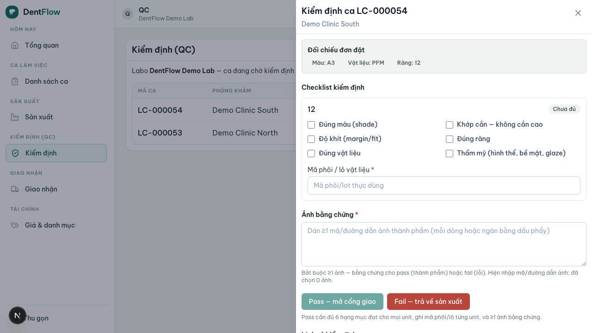

Hướng dẫn cho QC
QC (qc) là chốt chặn chất lượng cuối cùng trước khi hàng rời labo. Trách nhiệm của bạn là kiểm định: đối chiếu đúng răng (tooth), shade, vật liệu theo chỉ định; kiểm độ khít và thẩm mỹ; rồi duyệt nếu đạt hoặc đánh trượt nếu chưa đạt. Case chỉ được chuyển sang giao nhận sau khi bạn duyệt — nên cổng QC là điểm quyết định.

Công việc từ đầu đến cuối
- Nhận case ở cổng QC — case xong các công đoạn sản xuất rơi vào hàng đợi QC chờ kiểm.
- Đối chiếu chỉ định — kiểm đúng răng, shade, vật liệu so với work order và Rx.
- Kiểm độ khít & thẩm mỹ — soi độ khít, đường viền, bề mặt polish/glaze và tổng thể thẩm mỹ.
- Duyệt hoặc đánh trượt — đạt thì duyệt cho qua giao nhận; chưa đạt thì đánh trượt kèm lý do rõ ràng.
- Khởi tạo redo — khi đánh trượt, case quay lại sản xuất theo lý do bạn ghi để technician sửa đúng chỗ.
Duyệt & đánh trượt ở cổng QC
Cổng QC là nơi bạn ra quyết định cho từng case: duyệt hay trượt. Ghi lý do trượt cụ thể để không đoán mò khi sửa. Xem Cổng QC.
Quản lý redo khi đánh trượt
Khi bạn đánh trượt, case chuyển sang luồng redo và quay lại sản xuất. Nắm cách redo vận hành giúp bạn ghi lý do đúng và theo dõi case làm lại. Xem Quản lý redo.
Đánh trượt thì phải ghi lý do cụ thể — "chưa đạt" chung chung khiến technician sửa sai chỗ và sinh redo vòng hai. Đối chiếu shade và vật liệu theo danh mục chuẩn của labo, không theo cảm tính; đây là chốt chặn cuối trước khi hàng tới tay phòng khám.
Tips & lưu ý
- Kiểm theo checklist cố định để không sót hạng mục nào giữa các case.
- Ghi lý do trượt đủ để technician sửa ngay, kèm công đoạn cần làm lại.
- Tỉ lệ redo là chỉ số chất lượng — trượt sớm ở labo còn hơn để phòng khám trả về.
- Đăng nhập bằng loginId + mật khẩu, không phải email.
- Một user có thể mang nhiều role; QC có thể kiêm technician ở labo nhỏ.